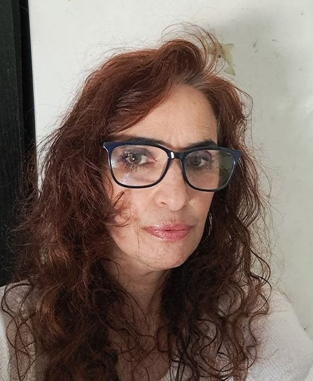

esterna estudante de astrologia
Faço mapas ha 10 anos, nos ultimo ano sobre a visão da astrogia evolutiva
credito que tudo acontece em nossa vida com o propósito de evoluir nossa alma. As dificuldades nos empurram para o caminho que devemos seguir, permitindo que nossa alma encontre seu propósito e os ensinamentos necessários. Ao aceitar esses ensinamentos, a vida se torna mais fluida e nos traz prosperidade em todas as áreas.
A astrologia pode nos mostrar o caminho que vai aligeirar a nossa vida
